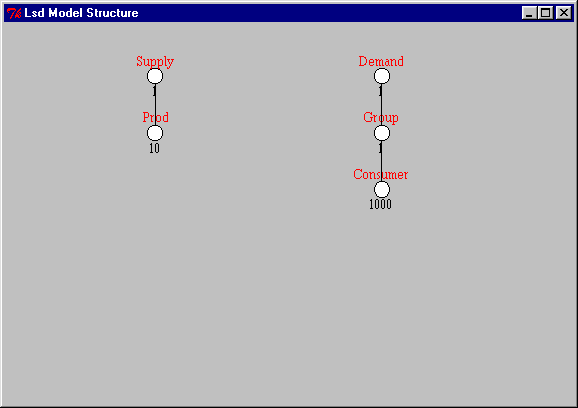

Once a model is loaded, its structure is shown with a graphical representation,
as in the figure below:

The graphical representation (which can be incomplete for very large models) provides a sketch of the basic structure of the model and can be used to quickly browse through the model, since the symbols can be clicked. The up-most Object Root is not shown in the window (because normally it shouldn't contain any element), which begins showing the Objects of the model from the descendants of Root. Each Object is represented by its label and by a circle connected with a line to its parent Object. Below each Object symbol are reported the number of instances currently contained in the model for that Object. In case there are multiple instances of its parent Object, there is one number for each group of descendants from each instance of the parent Object (if there are very many groups, the system shows only the initial ones).
Moving the mouse pointer over an Object symbol a window will show the content of the Object, in terms of Parameters (labels followed by (P)) and Variables (labels followed by (n), where n is the maximum number of lags, see Variables).
The window can also be used move quickly the browser to show the content
of one Object type, by double-clicking on its symbol.
The window offers also another shortcut: clicking on one Object symbol
with the right button of the mouse the system will show the initial values
for that Objects (equivalent to the entry Initial
Values in Menu Data when the main Browser is showing that Object type).